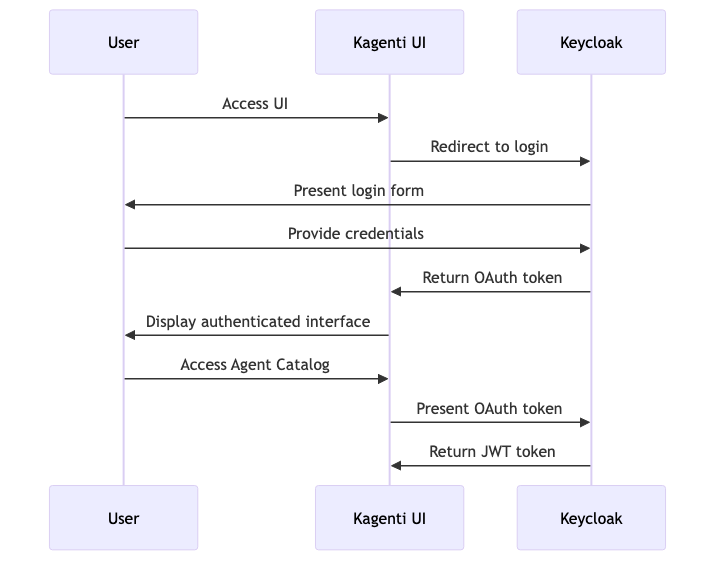
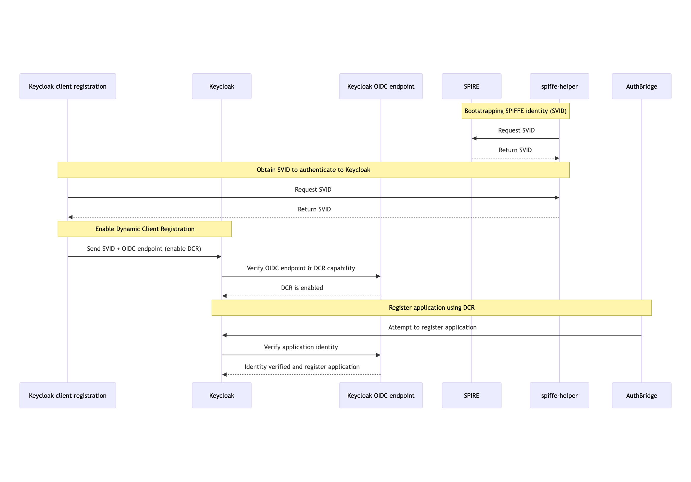
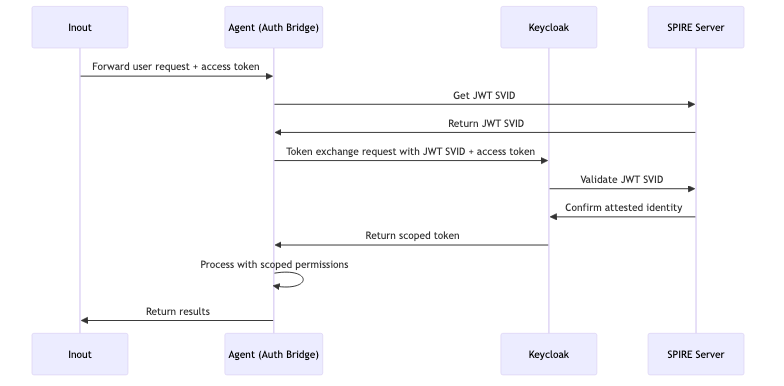
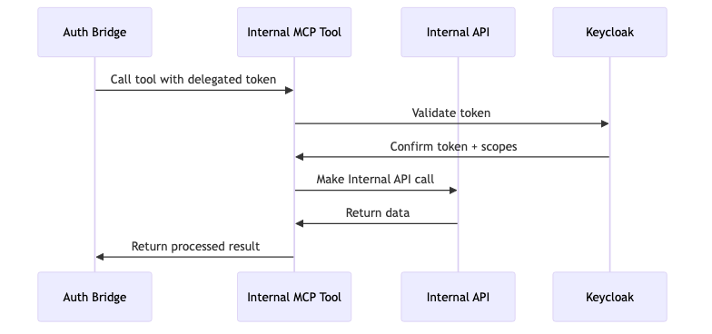
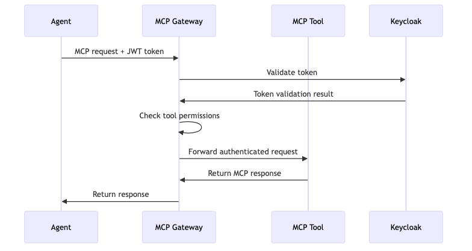
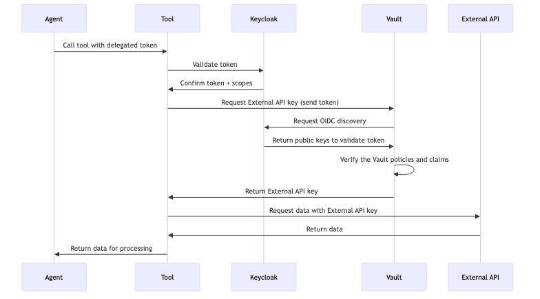

Security
Authentication flows
A diagram for each stage of authentication and delegation.
This page contains the six flows of authentication and delegation. The first flow starts when a user signs in. The last flow ends when a tool calls an external service for that user.
The source of each diagram is in
docs/diagrams/ as a Mermaid file. A PNG
file and an SVG file are also present, for a presentation.
1. The user signs in#
The user signs in to the console. Keycloak uses the OIDC authorization code flow and issues an access token.

POST /realms/sentinel/protocol/openid-connect/token
Content-Type: application/x-www-form-urlencoded
grant_type=authorization_code
&client_id=sentinel-ui
&code=<auth_code>
&redirect_uri=http://sentinel-ui.localtest.me:8080/callback
{
"access_token": "eyJ0eXAiOiJKV1Q...",
"token_type": "Bearer",
"expires_in": 600,
"scope": "openid profile email",
"id_token": "eyJ0eXAiOiJKV1Q..."
}
The token of the user contains the roles of the user:
{
"sub": "user-123",
"preferred_username": "slack-full-access-user",
"aud": "sentinel-ui",
"roles": ["slack-full-access", "slack-partial-access"],
"exp": 1735689600
}
2. The operator registers the workload#
A workload cannot get a token until it exists as a Keycloak client. The operator does this registration. See AuthBridge. There is no step for you.

3. The agent exchanges the token#
The agent must call a tool as the user. The sidecar exchanges the token of the user for a token that is valid only for that tool. The sidecar authenticates this request with the SPIFFE identity of the agent.

POST /realms/sentinel/protocol/openid-connect/token
Authorization: Bearer <JWT-SVID-of-the-agent>
Content-Type: application/x-www-form-urlencoded
grant_type=urn:ietf:params:oauth:grant-type:token-exchange
&subject_token=<user-token>
&subject_token_type=urn:ietf:params:oauth:token-type:access_token
&audience=slack-tool
&client_id=spiffe://localtest.me/ns/team/sa/slack-researcher
{
"access_token": "eyJ0eXAiOiJKV1Q...",
"token_type": "Bearer",
"expires_in": 300,
"scope": "slack-partial-access"
}
The new token names the user as the subject and the agent as the actor:
{
"sub": "user-123",
"act": { "sub": "spiffe://localtest.me/ns/team/sa/slack-researcher" },
"aud": "slack-tool",
"scope": "slack-full-access",
"exp": 1735686900
}
Note the lifetime. The new token is valid for 300 seconds. The token of the user is valid for 600 seconds. A token for delegation therefore has a shorter life than its source.
4. The agent calls the tool#
The agent sends the new token to the tool. The sidecar of the tool validates the token and confirms that the audience names the tool.

A tool can also examine the permissions of the user. This method is useful when one tool has operations at different permission levels:
def validate_request(request):
token = request.headers.get("Authorization", "").replace("Bearer ", "")
resp = requests.get(
"http://keycloak.keycloak.svc.cluster.local:8080"
"/realms/sentinel/protocol/openid-connect/userinfo",
headers={"Authorization": f"Bearer {token}"},
)
if resp.status_code != 200:
raise AuthenticationError("Invalid token")
scopes = resp.json().get("scope", "").split()
if "slack-full-access" in scopes:
return PermissionLevel.FULL
if "slack-partial-access" in scopes:
return PermissionLevel.PARTIAL
raise AuthorizationError("Insufficient permissions")
5. The request passes through the MCP Gateway#
When an agent reaches a tool through the MCP Gateway, the gateway is on the path.

POST /mcp
Host: mcp-gateway.localtest.me:8080
Authorization: Bearer <token>
Content-Type: application/json
{ "method": "tools/list", "params": {} }
Warning
Most authentication in the gateway is not implemented. Keep the enforcement in each sidecar active. Do not use the gateway as your security boundary. See MCP Gateway.
6. The tool calls an external service#
A tool that calls an external service needs a credential for that service. The agent must not hold that credential. The tool presents the token for delegation to a secret store, and the store returns the credential.

The permissions of the agent end at the tool. The external credential does not enter the agent.
The standards#
| Standard | Function |
|---|---|
| RFC 8693 | OAuth2 token exchange. This standard is the mechanism for delegation. |
| RFC 7523 | JWT client assertions. SPIFFE authentication to Keycloak uses this standard. |
| RFC 7519 | JSON Web Tokens. |
| SPIFFE | Workload identity. |
| OpenID Connect Core | User authentication. |